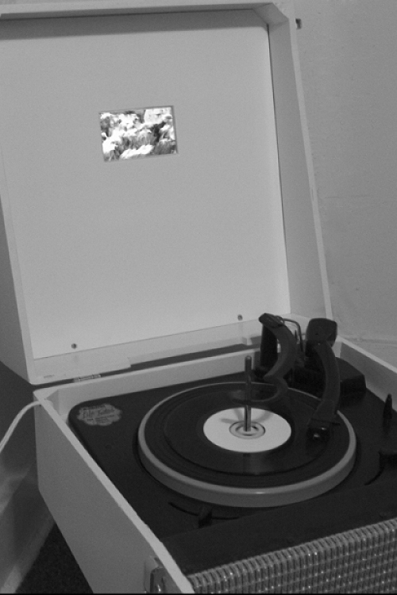
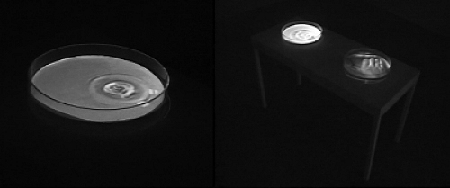

|
|  |
ARTIST: Ronald Lambert
TITLE: Toward a Possible Bliss
MATERIALS: Record player, record, video
DIMENSIONS: 17.25" x 17" x 12"
DATE: 2004
DESCRIPTION
I am interested in the connection between electronic equipment,
nostalgia and the experience of the sublime. In the piece "Toward
a Possible Bliss" I looked to the box record player as
an invention that allows for sound, and the emotions that are
tied up in music to be transported and shared between people.
Within popular music sentiment is delivered in a direct and
immediate fashion. For this piece I chose to record my version
of "When You're Smiling", a song that has been recorded
by numerous singers including Louis Armstrong, Dean Martin,
and Nat King Cole. I chose the song because of its commonality;
it is a song that most Americans have heard. Its lyrics have
a saccharine sweet quality to them that I hoped would make the
audience guess whether or not I was being ironic or sincere,
especially in combination with the video of oversaturated flowers.
I want a connection between the viewer as a participant in the
work and myself as the artist. A viewer dropping the needle
onto a record turns on the video. When the record is finished,
the turntable arm returns to its rest and the video turns off
to wait for the next person's involvement to begin again. The
piece recalls experience and emotions, and creates a link between
the viewer and myself. I want the piece to give the viewer the
sense that there are places and events, whether or not they
are constructed, that are beautiful and important.
|
|  |
ARTIST: Ronald Lambert
TITLE: Intravital
MATERIALS: Video installation
DIMENSIONS: 16.5" w x 36" l x 32" h
DATE: 2004
DESCRIPTION
There is beauty in those moments when we are reminded of
our physicality: when we see the reflection of the sky in a
puddle, or when the first drop of rain reminds us that we are
part of something bigger. In psychoanalysis water stands for
the unconscious mind. The unconscious occupies a large part
of our mind but is rarely expressed in everyday life. The fact
that water, the majority of our physical bodies, was chosen
to represent a part of our life that is not physical is ironic.
I also find it interesting that the concept of the sublime ties
us to the physical world when much of what is considered sublime
is derived from elements of life that remind us of the spiritual.
In "Intravital" I aim to make sense of my own desire
to break down and dissect how aspects of our life such as the
unconscious and the sense of the sublime function. I see an
interconnectedness between our bodies to the natural environment
and the unconscious to the physical world. Ripples of water
mimicked in skin, projected into large Petri dishes; I am intrigued
by the thought of relaxation being contained and studied; yet
separated from the life that could actually hold the emotions
or consciousness.
STATEMENT
There are instances when the environment reminds us of our
lives, such as the point at the beginning of a rainstorm when
you're not sure if you feel the water yet or not, in extreme
weather when our lives are threatened, and also when we encounter
something so breathtaking that for a brief moment our lives
are taken off course. Art has been given the job of capturing
the sublime, providing mementos of things the culture does or
should feel for. Culture moves at an exhausting pace yet it
is difficult to make art about flux, to make objects that ask
the audience to remain still in a culture which constantly threatens
to pass them by. As we leave our bodies to move at the pace
of progress, we pass the physical parts of live which remind
us that we take up space. It is in the moments of the sublime
that life slows down if even for a second. Sculpture provides
me with an opportunity to explore the sublime through direct
experience by allowing a viewer to see the construction, as
well as feel the sensation of the elements, and the phenomena
that is created. Art can still mimic life physically; it can
also mimic the experiences of life, adding interjections to
remind us of the pace at which we live and how one perceives
beauty and the sublime.
I aim to create work that is beautiful; I want the viewer to
be at first attracted to the form and display and after the
information provided in the materials sets in, I want the viewer
to be somewhat repulsed by the futility of the gesture of mimicking
the experiences of the natural world. I desire to artistically
explore a sense of constructedness and impermanence, which reminded
me of our own impermanence despite the best efforts of science
and medicine. While technology explains away things that were
once mysteries, phenomena, or even miracles, the sight of such
occurrences still inspire awe. The sublime comes from a need
to be awed, a need to break routine, a need to feel there is
still wonder in the world around us. As the natural environment
shrinks, the sublime recedes into such miniscule events as the
concentric rings formed from a drop of water, of the reflection
of the sky in a puddle alongside the walkway.
CONTACT
Ronald Lambert
Seattle WA
zelambert AT hotmail.com
|
|